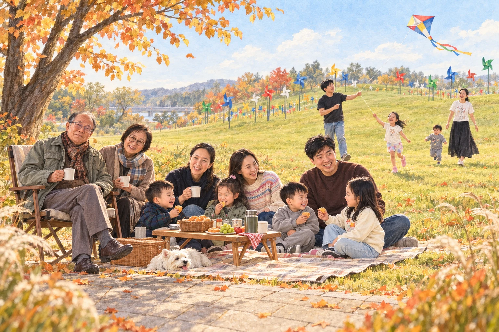
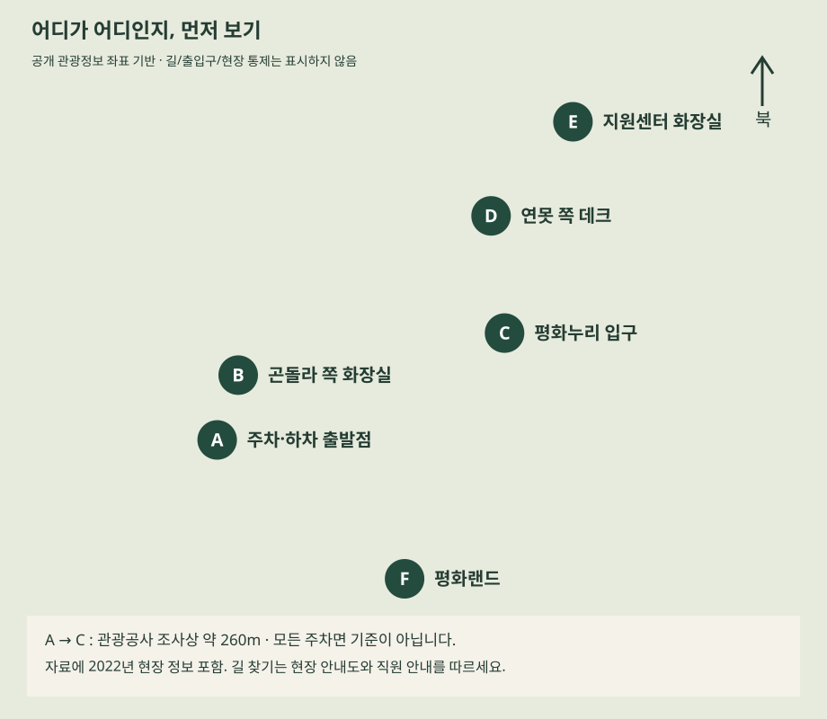

도착, 화장실부터
차에서 바로 잔디로 가지 않습니다. 안전한 합법 하차 지점에서 동행자와 먼저 내리고 운전자만 주차합니다. 화장실과 귀가할 때 만날 곳을 확인합니다. 장애인 구역은 이용 자격이 있는 차량만 이용합니다.
주차·하차 약 30분의 계획 여유3세부터 90세까지 · 추석 당일 나들이
아이들은 놀고, 어른들은 쉬고.
다시 한자리에 모여 밥을 먹는 하루.
확인일 2026.09.13 · 날짜·출발지·인원·차량 수 미정
아래 시간은 10:30 현장 도착을 가정한 제안입니다. 예약·전화 확인은 아직 하지 않았습니다.

먼저 정리할 것
결정: 파주 임진각 평화누리 피크닉 + 평화랜드. 숙박 없이 오전 출발·오후 귀가 방향입니다.
미정: 방문 날짜·출발 시각, 점심 식당, 텐트 허용 여부, 아이들 기구 선택. 출발지와 교통 정보가 없어 집에서의 이동시간은 산정하지 않았습니다.
어르신에게 잔디 바닥 착석이나 공원 완주를 요구하지 않습니다. 의자·화장실이 가까운 쉼터를 먼저 정하고 성인 동행자가 함께합니다.
어르신의 평소 보행·승하차·화장실 이용 수준에 맞춰 줄이는 코스입니다. 조건이 맞지 않으면 실내 식사 중심으로 바꿉니다.
날짜 미정 / 파주 / 자가용 이동 / 실내 점심 + 피크닉
지나치게 이른 출발보다 도착 후 이동을 줄이는 것에 집중합니다. 각 시간은 예약 시간이나 실측 대기시간이 아닌 계획안입니다.
차에서 바로 잔디로 가지 않습니다. 안전한 합법 하차 지점에서 동행자와 먼저 내리고 운전자만 주차합니다. 화장실과 귀가할 때 만날 곳을 확인합니다. 장애인 구역은 이용 자격이 있는 차량만 이용합니다.
주차·하차 약 30분의 계획 여유아이들과 보호자는 평화랜드에서 확인된 기구 2~3개만 선택합니다. 어르신은 성인 동행자와 편한 의자에서 쉬고, 무리해서 매 기구를 따라가지 않습니다. 실내 좌석을 확보하지 못하면 놀이 시간을 줄입니다.
놀이 45~60분을 제안 · 실제 대기시간 미측정관광센터 2층 임진각두부마을이 엘리베이터·의자·영업 조건을 충족하면 현장 식사안으로 선택합니다. 예약·편의 확인이 안 되면 당일 즉흥 계단 이동 대신 외부 식당안으로 바꿉니다.
실내 식사·화장실 약 1시간의 계획 여유허용된 평탄한 장소에 안정적인 등받이·팔걸이 의자를 먼저 둡니다. 돗자리는 아이들용으로 쓰고, 차·간식을 꺼냅니다. 아이들과 보호자는 사람·연못·나무에서 떨어진 허용 구역에서 연을 날립니다. 바람이나 혼잡이 심하면 연 대신 짧은 놀이로 바꿉니다.
피크닉 약 60분 · 텐트 허용·연날리기 구역 사전 확인전원이 언덕 꼭대기까지 가지 않습니다. 바람개비가 보이는 접근 가능한 자리에서 사진을 찍고, 쉬고 싶은 분은 그대로 앉아 계십니다. 카페는 영업·의자·접근성을 확인한 경우에만 추가합니다.
사진·산책 15~30분의 계획 여유화장실을 다녀온 뒤 어르신은 동행자와 안전한 장소에서 기다립니다. 운전자가 차를 가져오고 짐은 마지막에 싣습니다. 피로·바람·정체가 늘면 이보다 일찍 출발합니다.
귀가 도착 시각은 출발지·실시간 교통에 따라 결정11시 놀이 → 공원 간식·짧은 피크닉 → 일찍 정리 → 사전 확인한 시간에 들메에서 늦은 점심 → 귀가. 식사 후 공원으로 다시 들어오지 않는 안을 권합니다. 어린이는 평소 식사·낮잠 시간에 맞춰 앞당기세요.
실제 위치와 이동상의 주의점
아래는 공개 관광정보 좌표로 새로 그린 편의시설 위치 개략도입니다. 실제 길·출입구·통제선은 현장 안내로 확인하세요.[15][16]

이미지를 누르면 크게 볼 수 있습니다. 위치 자료: 한국관광공사. 도보 경로가 아니며 최신 시설 상태를 보장하지 않습니다.
위는 순서도입니다. 화살표는 실제 길 모양·거리·계단 없는 경로를 뜻하지 않습니다.
접근성 지도에는 2022년 공사 예정 문구와 과거 카페명이 남아 있습니다. 현재 개방·시설 상태를 현장 답사로 확인한 자료는 아닙니다. 걷는 시간은 체력·노면·혼잡에 따라 달라져 임의로 ‘몇 분’이라고 확정하지 않았습니다.
추천은 조건부 · 모든 추석 영업 미확인
공원 안 우선: 임진각두부마을 — 엘리베이터·의자·화장실·영업 확인 후.
차로 이동한다면: 들메 한정식 — 입식 좌석 사진과 접근성 과거 조사 근거가 있지만, 팔걸이 의자와 현행 화장실 조건은 다시 확인해야 합니다.
어느 후보도 등받이+팔걸이 의자까지 확보됐다고 보장할 수 없습니다. 메뉴가격은 출처 시점의 참고값이며 2026 추석 견적이 아닙니다.
후보 01 · 현장 점심 1순위, 좌석·엘리베이터 확인 조건
차를 다시 타지 않고 두부·밥으로 식사 가능. 매운 양념은 따로 요청, 뜨거운 전골은 보호자가 덜어 식히기. 반찬 셀프바·태블릿 주문은 동행 성인이 담당. 부드러운 메뉴라고 모든 연령의 삼킴 안전을 보장하지 않음.
2026 추석 영업·예약 가능 여부 미확인. 지도 핀과 실제 건물은 주소·전화로 대조하세요.
후보 02 · 간단한 면 식사 예비
아이에게 맵지 않은 우동/잔치국수를 잘라 제공할 수 있는지 문의. 한정식보다 간단한 점심 가능성이 있으나 서비스 속도 보장 없음. 지도에는 148-73 곤돌라 건물로 표시돼 있어 그대로 따라가면 혼동; 실제 관광센터 2층을 찾기.
2026 추석 영업·예약 가능 여부 미확인. 지도 핀과 실제 건물은 주소·전화로 대조하세요.
후보 03 · 짧은 커피 휴식 후보; 식사·90세 휴식 거점으로 확정 금지
공식 운영목록 확인이 된 카페. 그러나 연못 중앙 포비 임진각평화누리점과 다른 주소/지도이다. 평화누리점 사진·전화·시간을 이 지점에 붙이지 말 것.
2026 추석 영업·예약 가능 여부 미확인. 지도 핀과 실제 건물은 주소·전화로 대조하세요.
후보 04 · 공원 휴식 보조 후보, 현행 운영 여부/요일 먼저 확인
바람개비/잔디 활동과 같은 공원 안에서 휴식할 위치. 90세에게 2층 풍경이나 야외테라스부터 권하지 말고 1층 실내 의자를 먼저 확인. 3세는 연못 주변에서 보호자 동행. 영업 불확실하므로 유일한 화장실·휴식 대안으로 잡지 않기.
2026 추석 영업·예약 가능 여부 미확인. 지도 핀과 실제 건물은 주소·전화로 대조하세요.
후보 05 · 의자 식사·실내 편안함 우선 외부 1순위, 팔걸이 의자 문의 필수
명확한 입식사진·아기의자·주차장·관광공사 접근성 기록이 있어 외부 후보 중 근거가 가장 좋음. 표고들깨죽/밥/불고기 등 부드러운 음식 선택 가능성; 생표고·떡·생선가시 등은 각자 씹기/삼킴 능력에 맞게 피하거나 잘라주기. 코스식사로 귀가가 늦어질 수 있어 간단한 정식·예상 식사시간 문의. 공원 활동을 마치고 나오는 길 한 번만 이동하는 안 권장; 주행시간은 경로조회 안 해 확정하지 않음.
2026 추석 영업·예약 가능 여부 미확인. 지도 핀과 실제 건물은 주소·전화로 대조하세요.
후보 06 · 두부 음식은 적합하나 좌석 조건 때문에 외부 2순위
관광공사가 가족 방문·장단콩 두부·두부보쌈을 소개하는 실제 업체이며 2025-12 방문 기록 교차확인. 다만 바닥에 앉아야 하면 제외. 계란밥은 아이·고령자용 완숙으로 변경 가능한지 물어볼 것. 이름 비슷한 임진각두부마을과 별개.
2026 추석 영업·예약 가능 여부 미확인. 지도 핀과 실제 건물은 주소·전화로 대조하세요.
“추석 연휴 ○일에 어린아이와 90세 어르신이 함께 갑니다. 계단 없이 주차장부터 좌석·화장실까지 이동할 수 있나요? 엘리베이터가 있나요? 등받이와 팔걸이가 있는 의자를 준비할 수 있나요? 아기의자와 덜 매운 메뉴, 그날 영업시간과 예약 가능 여부도 알려주세요.”
키·개월 수 확인이 먼저
9월 평시 운영은 평일 11:00–18:00, 주말 11:00–18:40입니다. 공휴일·날씨 변동은 별도 확인이 필요합니다. 문의 031-953-4448.[19]
대부분의 개별권은 어린이 4,000원, 성인·청소년 5,000원. 자유권은 어린이 36,000원, 성인·청소년 38,000원이며 평일 이용 불가·동전시설 제외입니다. 쿠폰의 권종·보너스·공유 조건은 공식 문구가 모호해 확정하지 않았습니다.[19]
계산 예: 어린이 1명 + 성인 1명이 각각 유료로 같은 기구에 탑승하면 1회 9,000원, 3회 27,000원입니다. 이는 입장/탑승 가능 보장이 아니라 개별권 단순 합산이며 식사·주차·간식은 제외입니다.[19]
3세의 정확한 개월 수와 키를 알려준 뒤 매표소에서 먼저 확인하세요. ‘보호자 동반’이라는 문구가 모든 아이의 탑승을 허용한다는 뜻은 아닙니다.
두 공식 페이지 모두 음주자 이용불가만 명시. 최소 키·연령·3세 보호자 동승 의무는 unknown. 현장 확인 후 첫 후보.[19][20]
8분; 770m. 휠체어 그대로 탑승 가능한지, 승하차 발판/문폭은 unknown.
어린이 4,000원 · 성인 5,000원. 승하차·좌석·안전장치 적합성은 현장 직원 판단을 따릅니다.
80cm 이상 어린이 이용 가능, 80cm 미만 보호자 동반 이용 가능. 두 페이지 일치.[19][20]
3분. 상하 움직임이 있어 아이 반응 보고 선택; 보호자 좌석/요금 확인.
어린이 4,000원 · 성인 5,000원. 승하차·좌석·안전장치 적합성은 현장 직원 판단을 따릅니다.
요금표: 90cm 미만 단독이용불가. 소개: 90cm 이하 단독이용불가. 정확히 90cm는 현장 확인. 임산부·노/소약자·신체부적격자·음주자 관련 원문도 확인 필요.[19][20]
2분30초. 보호자 동승을 기본 전제로 문의; 90세 탑승 추천 아님.
어린이 4,000원 · 성인 5,000원. 승하차·좌석·안전장치 적합성은 현장 직원 판단을 따릅니다.
요금표: 24개월 미만 보호자 동승. 소개: 4세이상(36개월미만 보호자 동승시 무관), 신체부적격자 제한. 36개월 이상 만3세를 자동 허용하지 말 것.[19][20]
2분30초. 월령과 보호자 동승 가능 여부를 반드시 전화 확인.
어린이 4,000원 · 성인 5,000원. 승하차·좌석·안전장치 적합성은 현장 직원 판단을 따릅니다.
100cm 이하 단독승용/단독이용불가(두 페이지 일치). 임산부·노/소약자·신체부적격자·음주자 제한.[19][20]
3분. 회전하며 올라감; 보호자와 탈 수 있는지 아이 체격 기준 현장 판단.
어린이 4,000원 · 성인 5,000원. 승하차·좌석·안전장치 적합성은 현장 직원 판단을 따릅니다.
110cm 이하 단독승용불가. 임산부·노/소약자·신체부적격자·음주자 이용불가.[19][20]
높은 레일 위 자전거형 동력장치, 2인 승물. 고소공포/페달 부담 있어 후순위.
어린이 4,000원 · 성인 5,000원. 승하차·좌석·안전장치 적합성은 현장 직원 판단을 따릅니다.
소개: 4세 이상, 90cm 이하 단독이용불가. 요금표: 연령 미기재, 90cm 미만 단독이용불가. 3세는 허용 확답 전 제외.[19][20]
2분30초. 회전 자극/멀미 때문에 후순위. 보호자 동반이 4세 제한을 면제한다는 근거 없음.
어린이 4,000원 · 성인 5,000원. 승하차·좌석·안전장치 적합성은 현장 직원 판단을 따릅니다.
요금표: 90cm 이상 이용 가능. 소개: 90cm 이하 이용불가 및 임산부·노/소약자·신체부적격자·음주자 제한. 정확히 90cm는 현장 확인.[19][20]
수직 상승·하강 놀이. 보호자 동승 가능 여부 unknown; 아이가 겁내면 제외.
어린이 4,000원 · 성인 5,000원. 승하차·좌석·안전장치 적합성은 현장 직원 판단을 따릅니다.
90세 어르신의 놀이기구 탑승을 전제하지 않습니다. 건강·키·나이·안전장치 조건을 충족하지 못하면 관람 또는 다른 놀이로 바꿉니다.
확인된 것 / 아직 확인할 것
공식 평화누리 관리·운영 규정 PDF를 확인했지만 개인 텐트·그늘막의 현재 허용 크기·구역, 연날리기 제한을 확정할 근거는 확보하지 못했습니다. 과거 블로그 사진이나 대관 행사 규정을 개인 피크닉 규칙으로 대신 적용하지 않습니다.[18]
담당 시설관리팀 방문안내에 표시된 전화는 031-956-8307입니다. 원문 웹페이지의 전화 링크는 표시 번호와 달라 이 페이지는 보이는 번호로 연결합니다.[17]
물어볼 내용: 방문일에 개인 돗자리·접이식 의자·텐트·그늘막을 각각 어디에 둘 수 있는지, 크기 제한과 고정 방법, 연날리기 가능 구역, 공사·행사 통제, 가까운 개방 화장실.
확인 전 기본안: 텐트 없이도 가능한 짧은 나들이로 준비합니다. 취사·화기·숙박은 계획에 넣지 않습니다. 악천후에 텐트로 버티는 일정은 피합니다.
2026 평화누리 피크닉 페스티벌이 9월 18~20일 열릴 예정이라는 보도를 확인했습니다. 이것은 추석 방문 당일 행사가 확정됐다는 뜻이 아닙니다. 행사 뒤 시설 철거·잔디 정비·통제 잔존 여부를 별도 문의하세요.[22]
2026 추석의 공원 특정 구역 통제, 평화랜드 특별 운영, 식당의 실제 예약 가능 여부는 미확인입니다. 날씨 예보는 방문일이 정해진 뒤 단기예보로 다시 확인해야 합니다.
날짜를 정한 뒤 차례대로
체크는 이 브라우저에만 저장됩니다. 가족 간 공유 투표나 예약 기능이 아닙니다.
의자·실내 휴식·화장실이 확보되지 않거나, 어르신이 피곤해하시거나, 아이 낮잠 시간이 겹치면 놀이 한 번과 점심만 남깁니다. 비·강풍·더위·추위가 부담되면 공원 피크닉을 생략합니다.
공식 운영 정보, 관광공사 접근성 조사, 방문 후기와 검색 자료를 구분했습니다. 오래된 자료는 현재 상태 보장이 아닙니다. 자료 확인일 2026.09.13 / 전화 문의·현장 답사·예약 조회 미실시.